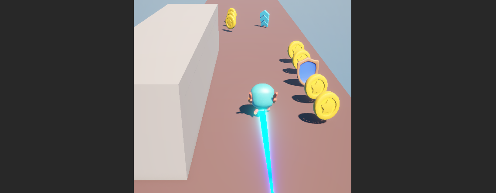

Programming
Gameplay systems, player mechanics, interactions, tools and other technical implementation.

A fast-paced endless runner inspired by games like Temple Run, featuring procedural level generation, power-ups, collectibles, and responsive movement. Originally planned as a level-based game, AstroKidGO evolved into a continuous mobile experience focused on game feel and gameplay flow.
01 — OVERVIEW
AstroKidGO is a fast-paced endless runner inspired by games such as Temple Run. The player must keep moving forward, avoid obstacles, collect items and survive for as long as possible while the level continuously generates new sections ahead. This game was made as part of the Unity Engine course and was specifically designed as a mobile game, using the mouse as a simulation for touch controls.
The project was a way for me to work with systems that were very different from my previous games, especially procedural level generation, player movement at higher speeds, power-ups, collectibles and dynamic level management. I also spent a lot of time working on the feel of the movement, camera and gameplay flow, trying to make the game feel responsive while keeping the endless loop engaging.
02 — MY WORK
Gameplay systems, player mechanics, interactions, tools and other technical implementation.
Player experience and design iteration.
Interface layouts, usability, HUD design, menus and visual communication.
Music, sound effects and audio feedback.
Pixelart used in all the UIs, collectibles and other assets.
Playtesting, bug fixing, iteration and improving the final gameplay experience.
03 — SHOWCASE
04 — MEDIA
05 — DEVELOPMENT
AstroKidGO started as another type of game. It was actually just a level runner. It was originally planned to have 20 levels with different environments and obstacles, but after finishing the core mechanics of the game, such as the level pieces, player movement, and simple obstacles, I decided to go with a Subway Surfers / Temple Run kind of approach, and I really loved that pivot.
This game was all about the power-ups. They became the heart of the game, and to be honest, they were one of, if not the hardest things I have ever implemented in any of my games so far. They broke in so many different ways that I had to redevelop and rethink most of them, but in the end, they all came together and worked out.
Once the core gameplay and power-ups were working, I focused on making the level generate itself as the player moved forward. I worked with reusable level pieces and a system that could spawn new sections while removing older ones behind the player. This was one of the parts that really helped me understand how to use prefabs in a more flexible way and build a game that could keep going without manually placing everything.
After the main systems were in place, I focused on making the game feel better to play. I worked on things like the player movement, camera, UI, animations, VFX, SFX and music, while also making adjustments to the environment and skybox. This was also when I started paying much more attention to game feel, since I realized that even small changes could make the movement and overall experience feel much more responsive.
After everything was put together, I spent a lot of time testing different player actions and trying to find anything that could break the gameplay loop. There were definitely a few frustrating bugs along the way, especially with movement, physics and the power-ups, but eventually I got the game to a point where everything was working as I wanted. This was a really important project for me, and I am very happy with how much it taught me about both programming and game design.
06 — TECHNOLOGY
07 — DEV COMMENTS
This section is for personal development notes, thoughts behind specific design decisions, technical challenges and lessons learned while making the game.
AstroKidGO was probably the project that taught me the most about how much small systems can affect the overall feel of a game. At first, I thought the idea of an endless runner would be fairly simple, but once I started working on things like procedural level generation, player movement, power-ups and checkpoints, I realized how many different systems had to work together at the same time.
A lot of the development was basically me making something work, finding out that it behaved strangely, and then trying to understand why. I had to deal with things like the player losing speed on ramps, enemies and objects behaving differently depending on the situation, and making sure new level pieces were generated and removed at the right time. It was frustrating sometimes, but it also made me much more comfortable with debugging and helped me understand how to build systems that can work together without everything falling apart.
This project also taught me a lot about prefabs and how useful they can be when building a game with many repeated elements. I learned how to make systems more modular and easier to expand, especially when working with the different level pieces. I also got to experiment with things like skyboxes, power-ups that affect the player's physics, and small gameplay details that have a surprisingly big impact on game feel. A lot of these things made me realize that making a mechanic work is only part of the process, and that making it feel good to use is just as important.
One of the things I intentionally wanted to do differently with AstroKidGO was to stop focusing so much on the art and instead put more attention into understanding game design and the gameplay cycle itself. I wanted to learn how movement, obstacles, rewards, power-ups and pacing could work together to create a fun loop. Looking back, I think this was a great experience for me because it allowed me to focus more on the design side of game development while still learning a lot technically, and I feel like I took a lot from this project into the games I made afterwards, from a game design perspective.